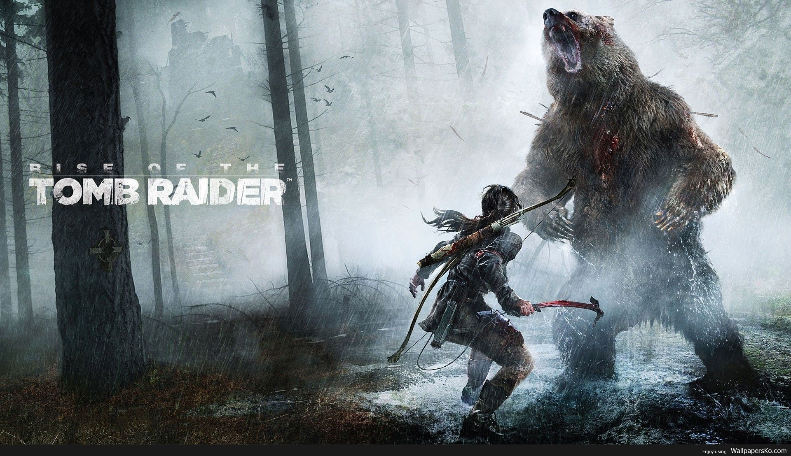

Embarque na maior jornada histórica da sua vida!
Rise of the Tomb Raider é um jogo eletrônico de ação-aventura da série Tomb Raider, segundo de uma trilogia que começou em 2013 com Tomb Raider, Rise of the Tomb Raider foi produzido pela Crystal Dynamics e publicado pela Microsoft Studios a 10 de Novembro de 2015 para Xbox One e Xbox 360. e pela Square Enix a 28 de Janeiro de 2016 para Microsoft Windows e no final do mesmo ano para PlayStation 4. Em Rise of the Tomb Raider, a protagonista Lara Croft tenta descobrir a mítica cidade russa de Kitej, que segundo as lendas, contém os segredos para a imortalidade. Rise of the Tomb Raider foi bem recebido pela critica da especialidade. De acordo com o site de pontuações agregadas Metacritic o jogo teve "análises geralmente favoráveis". Foram elogiados vários aspectos como os gráficos e a história e algumas das melhorias feitas em relação ao seu antecessor, mas que no entanto é muito similar com este não representando por isso um enorme salto evolucionário. Recebeu diversos prémios incluindo “Jogo do Ano para Xbox One” e “Melhor Jogo de Acção/Aventura” atribuídos pelo IGN. A sequela, Shadow of the Tomb Raider, será lançada a 14 de Setembro de 2018.
